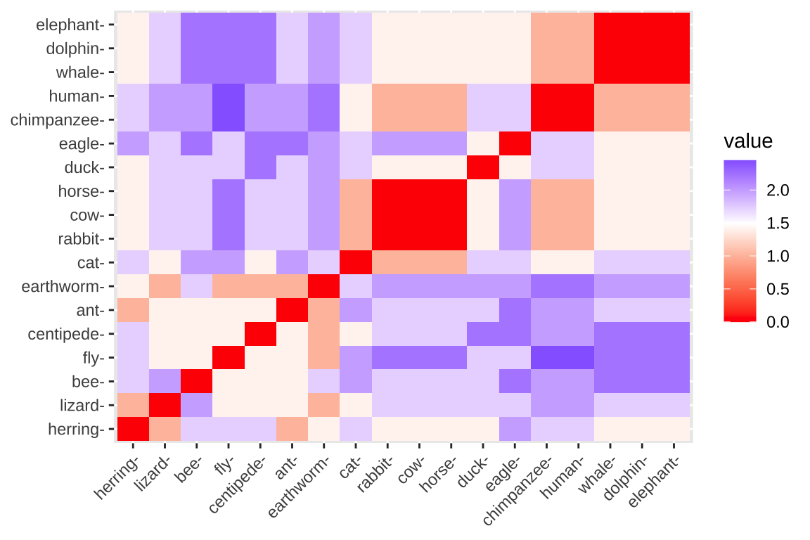
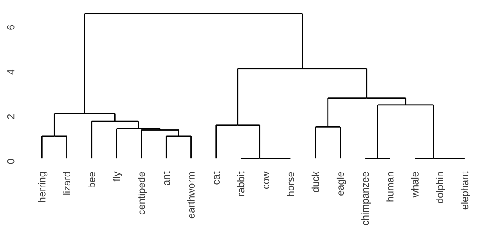
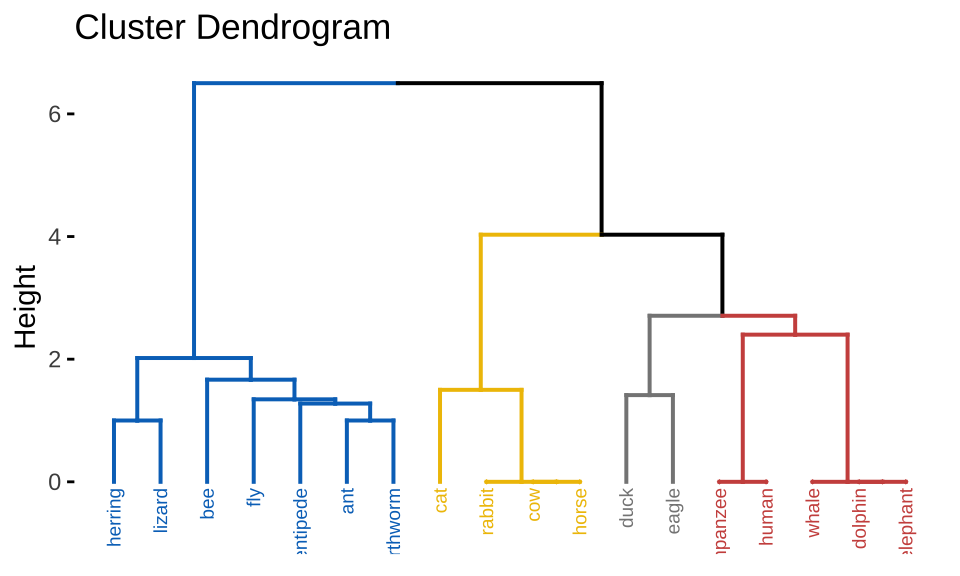
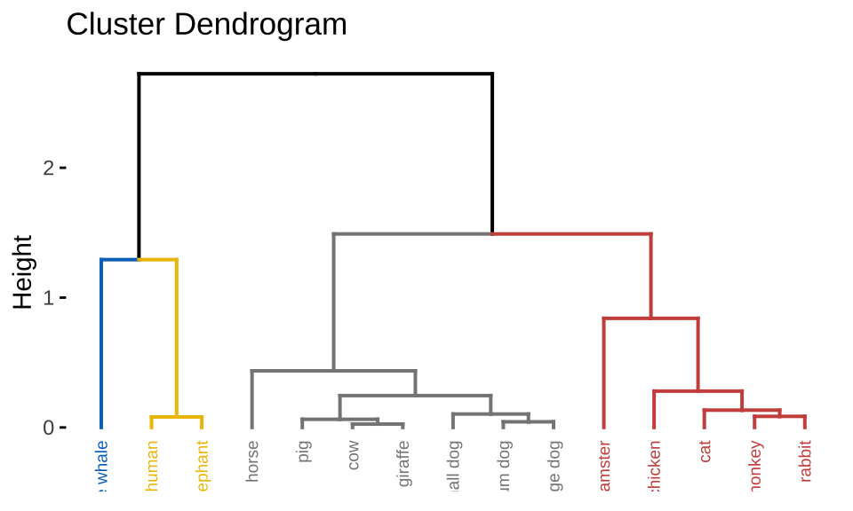
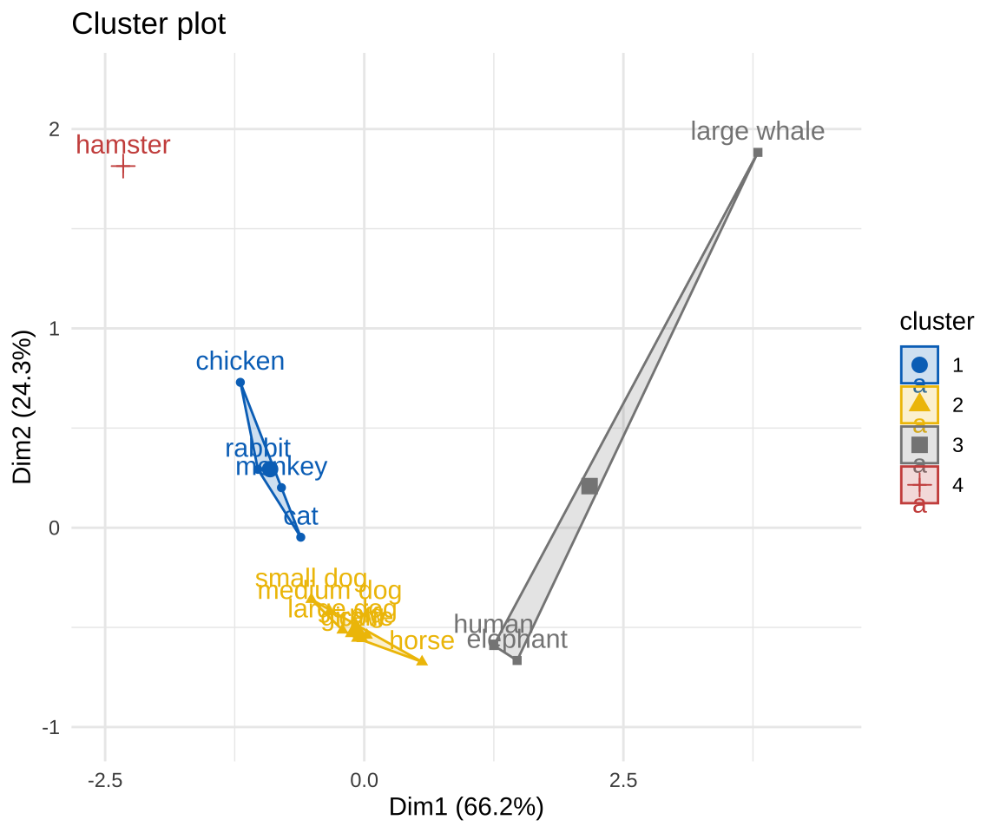
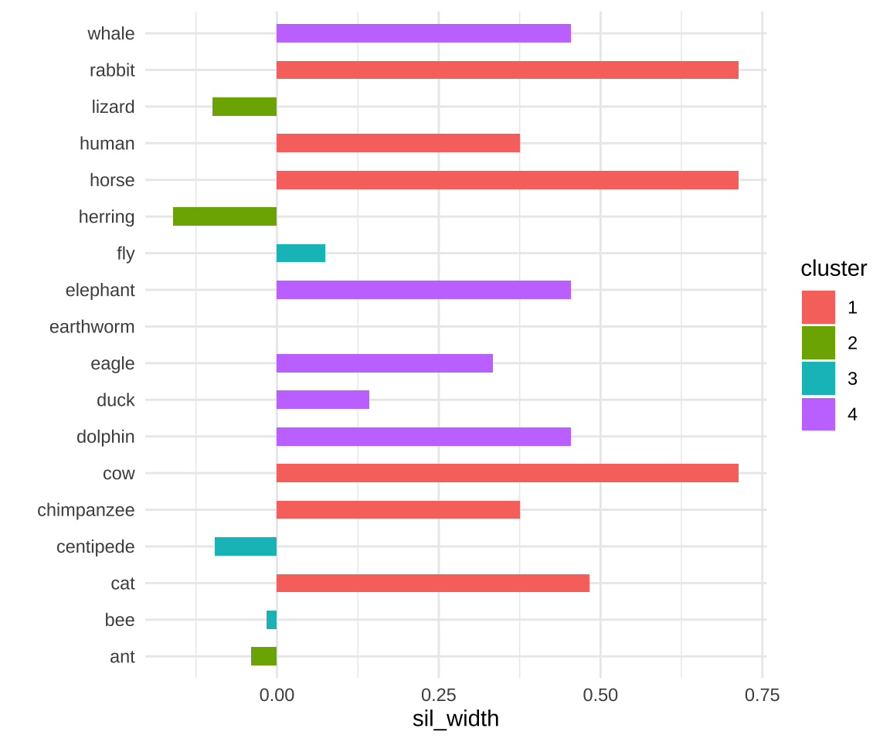
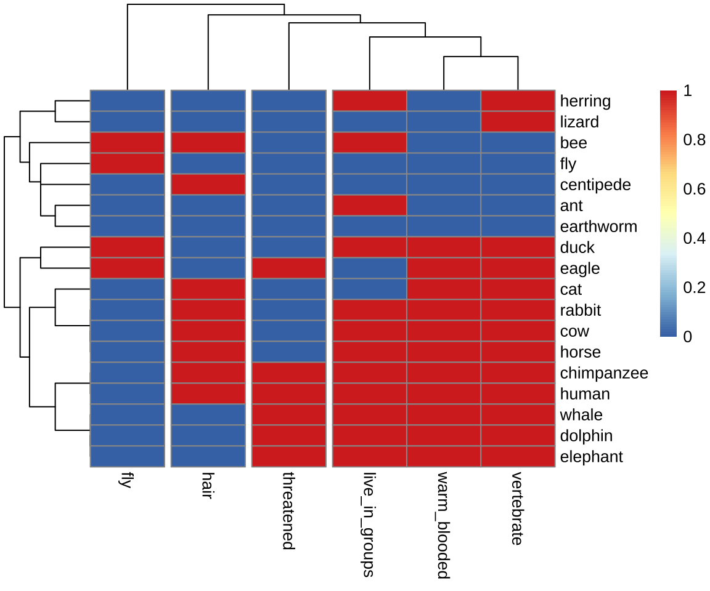
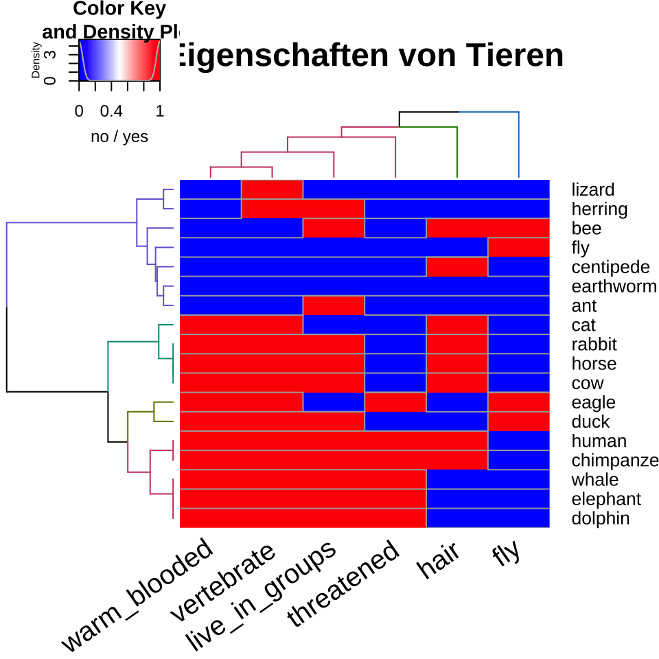
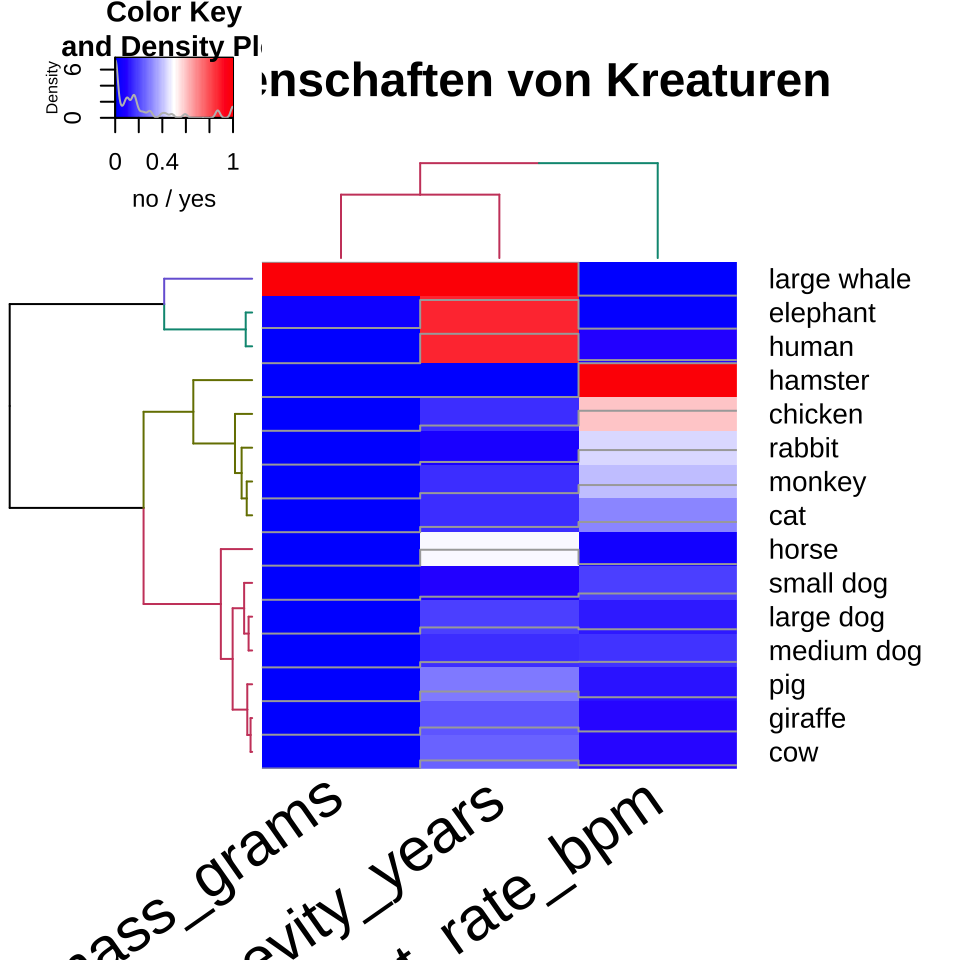

set.seed(20230727)
pacman::p_load(tidyverse, magrittr, palmerpenguins, readxl,
ggdendro, broom, cluster, factoextra, FactoMineR,
pheatmap, tidyclust, dlookr, janitor, corrplot,
dendextend, conflicted)
conflict_prefer("select", "dplyr")
conflict_prefer("filter", "dplyr")
conflict_prefer("mutate", "dplyr")
conflicts_prefer(dlookr::transform)53 Clusteranalysen
Version vom August 04, 2023 um 10:24:32

“Cluster together like stars!” — Henry Miller
In diesem Kapitel wollen wir uns mit der Clusteranalyse beschäftigen. Zuerst was verstehen wir unter einem Cluster? Ein Cluster ist ein Zusammenschluss von ähnlichen Beobachtungen. Nun stellt sich zuerst die Frage, was heißt ähnlich? Wir brauchen also Maßzahlen für die Ähnlichkeit zwischen zwei und mehreren Beobachtungen. In unserem Datensatz haben wir ja nicht nur zwei Beobachtungen, also Zeilen, sondern sehr viel mehr. Im Weiteren haben wir in erster Linie kein Outcome \(y\). Wir nehmen alle Spalten \(x\) aus unseren Daten und versuchen anhand der Spalten Gruppen über die Beobachtungen in den Zeilen zu bilden. Manchmal wollen wir dann nachräglich die Cluster nach einer Spalte in unseren ursprünglichen Daten einfärben oder benennen. Dieses Benennen von bekannten Zuordnungen hat aber erstmal mit dem Clusteralgorithmus nichts zu tun. Wir schauen uns im Folgenden diese Schwerpunktthemen an.
- Die hierarchisches Clustern über Dendrogramme in Kapitel 53.5.1
- Das k-NN oder nächste Nachbarn Clustern in Kapitel 53.5.3
- Die Heatmaps verbreitet in der genetischen Analysen in Kapitel 53.5.5
- Einmal das hierarchisches Clustern und k-NN über das R Paket
tidyclustin Kapitel 53.6
Wie immer können wir nicht alles erschlagen.
Weitere Tutorien für die Clusteranalyse
Wie immer gibt es eine Vielzahl an tollen Tutorien, die eine Clusteranalyse gut erklären. Ich habe hier einmal eine Auswahl zusammengestellt und du kannst dich da ja mal vertiefend mit beschäftigen, wenn du willst. Teile der Tutorien findest du vermutlich hier im Kapitel wieder.
- Das R Paket
dendextendIntroduction to dendextend um Dendrogramme wirklich schön zu zeichnen. - Das R Paket
pheatmapMaking a heatmap in R with the pheatmap package um Heatmaps mit allem was das Herz begehrt zu bauen. Dann haben wir noch das R Paket ComplexHeatmap, was sich vom R Paketpheatmapinspirieren lies. Das geht dann aber hier zu weit, schauen da, wenn du wirklich Heatmaps brauchst.
Wir wollen uns die Clusteranalyse an zwei Spieldaten anschauen sowie einmal an den echten Daten zu den Gummibärchen. Eigentlich werden ja auch gerne Fragebögen mit der Clusteranalyse ausgewertet, aber hier muss ich nochmal warten bis ich ein gutes Beispiel in den Beratungen hatte. Dann ergänze ich ein Beispiel bei dem Skript zu den Beispielhaften Auswertungen.
53.1 Genutzte R Pakete
Wir wollen folgende R Pakete in diesem Kapitel nutzen.
Am Ende des Kapitels findest du nochmal den gesamten R Code in einem Rutsch zum selber durchführen oder aber kopieren.
53.2 Daten
Beginnen wir mit einem normierten Datensatz aus dem R Paket cluster. Der Datensatz animals wurde von mir noch mit ein paar Tieren ergänzt und schaut sich sechs Eigenschaften von 23 Tieren an. Wir wollen im Folgenden nun herausfinden, ob wir anhand der Eigenschaften in den Spalten die Tiere in den Zeilen in Gruppen einordnen können. Einige der Tiere sind ja näher miteinander verwandt als andere Tiere. Die ursprünglichen Daten liefen noch auf einem \(1/2\)-System, das ändern wir dann zu \(0/1\) damit wir dann auch besser mit den Daten arbeiten können. Für die Algorithmen ist es egal, aber ich habe lieber \(1\) gleich ja und \(0\) gleich nein.
animals_tbl <- read_excel("data/cluster_animal.xlsx", sheet = 1) %>%
clean_names() %>%
mutate(across(where(is.numeric), \(x) x - 1))Schauen wir uns einmal den Datensatz in der Tabelle 54.3 an. Wir sehen, dass wir noch einige fehlende Werte in den Daten vorliegen haben. Das ist manchmal ein Problem, deshalb werden wir im Laufe der Analyse die NA Werte mit na.omit() entfernen.
| animal | warm_blooded | fly | vertebrate | threatened | live_in_groups | hair |
|---|---|---|---|---|---|---|
| ant | 0 | 0 | 0 | 0 | 1 | 0 |
| bee | 0 | 1 | 0 | 0 | 1 | 1 |
| cat | 1 | 0 | 1 | 0 | 0 | 1 |
| centipede | 0 | 0 | 0 | 0 | 0 | 1 |
| chimpanzee | 1 | 0 | 1 | 1 | 1 | 1 |
| cow | 1 | 0 | 1 | 0 | 1 | 1 |
| dolphin | 1 | 0 | 1 | 1 | 1 | 0 |
| duck | 1 | 1 | 1 | 0 | 1 | 0 |
| eagle | 1 | 1 | 1 | 1 | 0 | 0 |
| earthworm | 0 | 0 | 0 | 0 | 0 | 0 |
| elephant | 1 | 0 | 1 | 1 | 1 | 0 |
| fly | 0 | 1 | 0 | 0 | 0 | 0 |
| frog | 0 | 0 | 1 | 1 | NA | 0 |
| herring | 0 | 0 | 1 | 0 | 1 | 0 |
| horse | 1 | 0 | 1 | 0 | 1 | 1 |
| human | 1 | 0 | 1 | 1 | 1 | 1 |
| lion | 1 | 0 | 1 | NA | 1 | 1 |
| lizard | 0 | 0 | 1 | 0 | 0 | 0 |
| lobster | 0 | 0 | 0 | 0 | NA | 0 |
| rabbit | 1 | 0 | 1 | 0 | 1 | 1 |
| salmon | 0 | 0 | 1 | 0 | NA | 0 |
| spider | 0 | 0 | 0 | NA | 0 | 1 |
| whale | 1 | 0 | 1 | 1 | 1 | 0 |
Der Tierdatensatz ist schön, da wir es hier nur mit 0/1 Werten zu tun haben. Wir werden später in dem preprocessing der Daten sehen, dass wir alle Spalten in der gleichen Spannweite der Werte wollen. Das klingt immer etwas kryptisch, aber der nächste Datensatz über verschiedene Kreaturen macht es deutlicher.
Eine andere Art die Daten zu Gruppieren kannst du im Tutorium Clustering Creatures nochmal nachvollziehen.
Im Folgenen einmal der Datensatz, den wir dann in der gleichen Exceldatei finden nur eben auf dem zweiten Tabellenblatt. Wir reinigen noch die Namen und setzen die creature-Spalte auf Klein geschrieben. Wie du siehst, haben wir dann nur 15 Kreaturen und drei Spalten mit dem Gewicht, der Herzrate und dem maximalen möglichen Alter.
creature_tbl <- read_excel("data/cluster_animal.xlsx", sheet = 2) %>%
clean_names() %>%
mutate(creature = tolower(creature))In der Tabelle 54.4 sehen wir nochmal die Daten dargestellt und hier erkennst du auch gut, wo das Problem liegt. Die Masse der Tiere reicht von \(6g\) beim Hamster bis \(120000000g\) beim Wal. Diese Spannweiten in einer Spalte und zwischen den Spalten führt dann zu Problemen bei den Algorithmen. Deshalb müssen wir hier Daten nochmal normalisieren oder aber standardisieren. Je nachdem was da besser passt.
| creature | mass_grams | heart_rate_bpm | longevity_years |
|---|---|---|---|
| human | 9.0e+04 | 60 | 70 |
| cat | 2.0e+03 | 150 | 15 |
| small dog | 2.0e+03 | 100 | 10 |
| medium dog | 5.0e+03 | 90 | 15 |
| large dog | 8.0e+03 | 75 | 17 |
| hamster | 6.0e+01 | 450 | 3 |
| chicken | 1.5e+03 | 275 | 15 |
| monkey | 5.0e+03 | 190 | 15 |
| horse | 1.2e+06 | 44 | 40 |
| cow | 8.0e+05 | 65 | 22 |
| pig | 1.5e+05 | 70 | 25 |
| rabbit | 1.0e+03 | 205 | 9 |
| elephant | 5.0e+06 | 30 | 70 |
| giraffe | 9.0e+05 | 65 | 20 |
| large whale | 1.2e+08 | 20 | 80 |
Im Weiteren betrachten wir noch das Beispiel der Gummibärchendaten. Auch hier haben wir echte Daten vorliegen, so dass wir eventuell Ausreißer entdecken könnten. Da wir hier fehlende Werte in den Daten haben, entfernen wir alle fehlenden Werte mit der Funktion na.omit(). Damit löschen wir jede Zeile in den Daten, wo mindestens ein fehlender Wert auftritt. Da wir hier mittlerweile sehr viele Daten vorliegen haben, wollen wir das Problem auf die beiden Quellen FU Berlin und dem Girls and Boys Day eingrenzen.
Auch hier schauen wir uns in der Tabelle die ersten sieben Beobachtungen von den 192 Beobachtungen an. Wir sehen, dass wir hier mal ganz unterschiedliche Typen an Daten haben. Zum einen sehen wir dichotome Daten, wie das Geschlecht, sowie numerisch wie Alter und Größe, dann noch das Semester mit einer eher geordneten Struktur und nochmal ein Faktor mit sechs Stufen. Das schauen wir uns dann nochmal am Ende an, was wir dann machen können.
| gender | age | height | semester | most_liked |
|---|---|---|---|---|
| m | 35 | 193 | 10 | lightred |
| w | 21 | 159 | 6 | yellow |
| w | 21 | 159 | 6 | white |
| w | 36 | 180 | 10 | white |
| m | 22 | 180 | 3 | white |
| m | 22 | 180 | 3 | green |
| w | 21 | 163 | 3 | green |
Bevor wir jetzt aber die Daten clustern können, müssen wir die Daten vorher nochmal aufbereiten, damit die Algorithmen mit den Daten arbeiten können. Dann müssen wir am Ende auch noch vom tibble() in den data.frame() wechseln, da wir die Zeilennamen häufig brauchen. Wenn du beim tibble() bleiben willst, dann gibt es am Ende noch eine mögliche Lösung für dich.
Weitere Datensätze fürs Clustern
Andere mögliche Datensätze für die Zukunft: chorSub, flower, plantTraits, pluton, ruspini und agriculture. Die Datensätze sind teilweise im R Paket cluster enthalten.
Im Weiteren noch die Palmer Penguins mit dem Datensatz penguins aus dem R Paket palmerpenguins.
53.3 Daten preprocessing
Wir können die Daten so wir wie sie vorliegen haben in einem Clusteralgorithmus verwenden. Wir führen also keine Transformation der Daten durch, wir nutzen die Daten untransformiert. Dieses untransfomierte Verwenden der Daten führt aber meist dazu, dass Variablen nicht im gleichen Maße berücksichtigt werden. Es macht eben einen Unterschied, ob wir wie bei dem Alter sehr viele verschiedene Werte haben als beim Geschlecht. Es macht auch einen Unterschied, ob das Alter numerische Werte von 20 bis 60 haben kann und das Semester nur numerische Werte von 1 bis 10.
In dem Kapitel 18 findest du die hier verwendeten Standardfunktionen in R aus dem Paket dlookr für die Normalisierung sowie Standardisierung mit der Funktion transform(). Wenn es komplexer wird, dann empfehle ich den Workflow, wie er im Kapitel 60 für die Klassifikation von Daten vorgestellt wird. Am Ende des Kapitels zeige ich dir auf den Gummibärechendaten, wie dann alles einmal zusammenkommt.
53.3.1 Normalisieren
Wenn wir Normalisieren dann Zwängen wir Variablen in ein Intervall von \([0;1]\). Es gehen natürlich auch andere Intervalle, aber das Intervall von 0 bis 1 ist wohl das häufigste Intervall was genutzt wird. Dazu nutzen wir die Funktion transform() aus dem R Paket dlookr und mit der Option minmax kriegen wir dann alle Werte einer Spalte zwischen 0 und 1. Dann machen wir das mal schnell mit den Daten aus dem Kreaturendatensatz.
norm_creature_tbl <- creature_tbl %>%
mutate(mass_grams = transform(mass_grams, "minmax"),
heart_rate_bpm = transform(heart_rate_bpm, "minmax"),
longevity_years = transform(longevity_years, "minmax"))
norm_creature_tbl# A tibble: 15 × 4
creature mass_grams heart_rate_bpm longevity_years
<chr> <transfrm> <transfrm> <transfrm>
1 human 7.495004e-04 0.09302326 0.87012987
2 cat 1.616667e-05 0.30232558 0.15584416
3 small dog 1.616667e-05 0.18604651 0.09090909
4 medium dog 4.116669e-05 0.16279070 0.15584416
5 large dog 6.616670e-05 0.12790698 0.18181818
6 hamster 0.000000e+00 1.00000000 0.00000000
7 chicken 1.200001e-05 0.59302326 0.15584416
8 monkey 4.116669e-05 0.39534884 0.15584416
9 horse 9.999505e-03 0.05581395 0.48051948
10 cow 6.666170e-03 0.10465116 0.24675325
11 pig 1.249501e-03 0.11627907 0.28571429
12 rabbit 7.833337e-06 0.43023256 0.07792208
13 elephant 4.166619e-02 0.02325581 0.87012987
14 giraffe 7.499504e-03 0.10465116 0.22077922
15 large whale 1.000000e+00 0.00000000 1.00000000 Wir sehen hier, dass in der Spalte mass_grams der Wal den maximalen Wert 1 kriegt und der Hamster den Wert 0. Alle anderen Kreaturen spannen sich numerisch zwischen diesen beiden Extremen auf. Das Gleiche erkenne wir dann auch bei der Herzrate und den Lebenspanne. Hier sind dann auch immer der Hamster und der Wal die extremsten numerischen Vertreter in den Spalten.
Hier helfen natürlich auch die Funktionen von dem R Paket dplyr und der Hilfsseite von across() um mehrere Spalten schneller in mutate zu transformieren. Aber wir üben hier nur begrenzt Programmierung und es ist dann an dir dieses Problem zu lösen.
53.3.2 Standardisieren
Die Standardisierung zwingt Variablen in eine \(\mathcal{N(0,1)}\) Standardnormalverteilung. Das heißt, wir transformieren alle Variablen auf einen Mittelwert von \(0\) und einer Standardabweichung von \(1\). Das macht dann auch die Daten sehr schon gleichförmig. Wir wollen also für unseren Gummibärchendatensatz, dass das Alter einen Mittelwert von 0 und eien Standardabweichung von 1 kriegt. Hier nutzen wir auch die Funktion transform() aus dem R Paket dlookr mit der Option zscore. Es macht keinen Sinn Faktoren zu standardisieren, wir standardisieren nur numerische Spalte und das Semester zu transformieren ist schon so eine grenzwertige Sache.
scale_gummi_tbl <- gummi_tbl %>%
mutate(gender = as_factor(gender),
age = transform(age, "zscore"),
height = transform(height, "zscore"),
semester = transform(semester, "zscore"),
most_liked = as_factor(most_liked))
scale_gummi_tbl# A tibble: 192 × 5
gender age height semester most_liked
<fct> <transfrm> <transfrm> <transfrm> <fct>
1 m 1.80953590 2.3007223 2.5534970 lightred
2 w -0.37262314 -1.3535636 1.0237890 yellow
3 w -0.37262314 -1.3535636 1.0237890 white
4 w 1.96540440 0.9034953 2.5534970 white
5 m -0.21675464 0.9034953 -0.1234921 white
6 m -0.21675464 0.9034953 -0.1234921 green
7 w -0.37262314 -0.9236476 -0.1234921 green
8 m -0.21675464 -0.1712947 -0.1234921 green
9 m -0.06088613 0.4735793 -0.1234921 white
10 m -0.52849164 0.9034953 -0.1234921 lightred
# ℹ 182 more rowsWie beim Normalisieren helfen hier natürlich auch die Funktionen von dem R Paket dplyr und der Hilfsseite von across() um mehrere Spalten schneller in mutate zu transformieren. Wie oben schon angemerkt, dass ist dann deine Fingerübung.
53.3.3 Das data.frame() Problem
Leider ist es so, dass fast alle Pakete im Kontext der Clusteranalyse mit den Zeilennamen bzw. row.names() eines data.frame() arbeiten. Das hat den Grund, dass wir gut das Label in den Zeilennamen parken können, ohne das uns eine Spalte in den Auswertungen stört. Meistens ist das Label ja ein character und soll gar nicht in den Clusteralgorithmus mit rein. Deshalb müssen wir hier einmal unsere tibble() in einen data.frame() umwandeln. Die tibble() haben aus gutem Grund keine Zeilennamen, die Zeilennamen sind ein Ärgernis und Quelle von Fehlern und aus gutem Grund nicht in einem tibble() drin. Hier brauchen wir die Zeilennamen aber.
Wir bauen uns also einmal einen data.frame() für unseren Tierdatensatz und setzen die Tiernamen als Zeilennamen bzw. row.names(). Wir entfernen dann auch noch schnell alle fehlenden Werte, denn wir wollen usn hier nicht noch mit der Imputation von fehlenden Werten beschäftigen.
animals_df <- animals_tbl %>%
na.omit() %>%
as.data.frame() %>%
set_rownames(.$animal) %>%
select(-animal)Das Ganze machen wir dann auch noch einmal für die normalisierten Kreaturendaten. Wir wollen dann ja nur auf den normalisierten Daten weitermachen.
norm_creature_df <- norm_creature_tbl %>%
as.data.frame() %>%
set_rownames(.$creature) %>%
select(-creature)Wie eben gesagt, ist es teilweise echt nervig immer die row.names() mit zu nehmen und alles ein data.frame() zu nutzen. Insbesondere wenn die Daten sehr groß werden, kann kann es sehr ungünstig sein, alles in einem data.frame() zu lagern. Deshalb gibt es das Paket tidyclust, welches ich am Ende nochmal vorstelle.
53.4 Distanzmaße
Wie nah oder weit entfernt sind jetzt zwei Beobachtungen? Wenn wir die Distanz von zwei Beobachtungen zueinander haben, wie weit ist dann eine dritte Beobachtung entfernt? Aus den paarweisen Abständen aller Beobachtungen zueinander können wir dann Cluster bilden. Wir brauchen aber zuallerst die Distanzen der Beobachtungen zuaeinander. Wir betrachten dabei im Folgenden immer die Distanzen zwischen den Zeilen des Datensatzes. Das heißt, wir wollen immer die Distanzen zwischen den Beobachtungen berechnen. Wie nah oder fern sind sich zwei Beobachtungen gegeben den Spalten? Wir schauen uns einmal zwei sehr intuitive Distanzmaße mit der euklidischen sowie der manhattan Distanz an.
- Euklidische Distanz
-
Die euklidische Distanz \(d_E\) ist einfach die Wurzel des quadratischen Abstands zwischen zwei Punkten \(p\) und \(q\). \[ d_E(p,q) = \sqrt{(p-q)^2} \]
- Manhattan Distanz
-
Die manhattan Distanz \(d_M\) ist einfach der absolute Abstands zwischen zwei Punkten \(p\) und \(q\).\[ d_M(p,q) = \lvert p-q \rvert \]
Es gibt noch viel mehr Distanzen, die du berechnen kannst. Je nach R Paket sind unterschiedlich Distanzen dann auszuwählen. Hier eine generelle Empfehlung zu geben ist mir unmöglich. Da müssen wir dann zusammen mal schauen, was für deine Daten dann konkret passt.
- Die Funktion
dist()als die Standardfunktion: Die Funktion akzeptiert nur numerische Daten als Eingabe und das zu verwendende Abstandsmaß muss eines der Folgenden sein:euclidean,maximum,manhattan,canberra,binaryoderminkowski. Die Hilfeseite?dist()liefert mehr Informationen über die Distanzmaße. - Die Funktion
get_dist()aus dem R Paketfactoextra: Die Funktion akzeptiert nur numerische Daten als Eingabe. Im Vergleich zur Standardfunktiondist()unterstützt sie korrelationsbasierte Abstandsmaße einschließlich der Methodenpearson,kendallundspearman. - Die Funktion
daisy()aus dem R Paketcluster: Die Funktion kann mit anderen Variablentypen umgehen als numerisch, also auch mit Kategorien und Faktoren. In diesem Fall wird automatisch der Gower-Koeffizient als Metrik verwendet. Der Gower-Koeffizient ist eines der beliebtesten Näherungsmaße für gemischte Datentypen. Weitere Einzelheiten findest du auf der Hilfeseite der Funktion?daisy. - Die Funktion
PCA()aus dem R PaketFactoMineR: Die Funktion erlaubt es dir eine Hauptkomponentenanalyse zu rechnen. Das ist aber dann ein eigens Thema für sich. In dem Kapitel 54 erkläre ich nochmal die Hauptkomponentenanalyse und zeige dort auch, wie du mit den Ergebnissen einer Hauptkomponentenanalyse clustern kannst.
Wenn du deine Daten transformierst, dann werden auch die Abstandmaße ähnlicher. Zum Beispiel werden durch die Standardisierung die folgenden Abstandsmaße kelinere Werte ergeben: Euklidisch, Manhattan und die Korrelation. Das ist aber nicht so schlimm, wenn du nicht untransformierte Daten mit transformierten Daten vergleichst.
Die Funktion fviz_dist() aus dem R Paket factorextra ermöglicht dir die Distanzmatrix zu visualisieren. In der Abbildung 53.1 kannst du dir die Distanzmatrix der Funktion dist() als Heatmap anzuschauen. Wir nutzen die Distanzmatrix dann aber gleich um auf den Distanzen Cluster zu bilden.
animals_df %>%
dist(method = "euclidean") %>%
fviz_dist()
Wenn du also die Distanzen zwischen deinen Beobachtungen berechnet hast, kannst du mit der Distanzmatrix entweder hierarchisch Clustern oder über den \(k\)-NN Algorithmus Gruppen bilden.
53.5 Algorithmen fürs Clustern
53.5.1 Hierarchische Clusteranalyse
Es gibt vier gängige Ansätze für die Cluster-Cluster-Distanzierung, auch Linkage genannt:
-
single linkage: Der Abstand zwischen zwei Clustern ist der Abstand zwischen den beiden nächstgelegenen Beobachtungen. In R nutzen wir dann
singleals Option. -
average linkage: Der Abstand zwischen zwei Clustern ist der Durchschnitt aller Abstände zwischen den Beobachtungen in einem Cluster und den Beobachtungen im anderen Cluster. In R ist es dann die Option
average. -
complete linkage: Der Abstand zwischen zwei Clustern ist der Abstand zwischen den beiden am weitesten entfernten Beobachtungen. Auch hier passt es dann mit dem Optionnamen von
complete. -
centroid method: Der Abstand zwischen zwei Clustern ist der Abstand zwischen ihren geometrischen Mittel oder Medianen. Hier nutzen wir die Option
median. -
ward method: Der Abstand zwischen zwei Clustern ist proportional zur Zunahme der Fehlerquadratsumme, die sich aus der Verbindung der beiden Cluster ergeben würde. Die Fehlerquadratsumme wird als Summe der quadrierten Abstände zwischen den Beobachtungen in einem Cluster und dem Schwerpunkt des Clusters berechnet. In R haben wir hier die Wahl zwischen
ward.Dundward.D2. Wenn, dann nutze bitteward.D2da es sich um die neuere Implementierung handelt, die weniger fehleranfällig ist.
grp_animal <- cutree(h_clust_animal , k=3)
grp_animal ant bee cat centipede chimpanzee cow dolphin
1 1 2 1 3 2 3
duck eagle earthworm elephant fly herring horse
3 3 1 3 1 1 2
human lizard rabbit whale
3 1 2 3 Wir nehmen jetzt mal die normalisierten Kreaturen
grp_creature <- cutree(h_clust_creature , k=3)
grp_creature human cat small dog medium dog large dog hamster
1 2 3 3 3 2
chicken monkey horse cow pig rabbit
2 2 3 3 3 2
elephant giraffe large whale
1 3 1 53.5.2 Dendrogramm
ggdendrogram(h_clust_animal)
ggdendrogram(h_clust_creature)

Hierarchical cluster analysis on famous data sets - enhanced with the dendextend package
fviz_dend(h_clust_animal, cex = 0.5, k = 4, palette = "jco")
fviz_dend(h_clust_creature, cex = 0.5, k = 4, palette = "jco") 

53.5.3 k-means Clusteranalyse
Siehe auch pam() aus dem R Paket cluster.
knn_animal <- animals_df %>%
kmeans(centers = 4)knn_creature <- norm_creature_df %>%
kmeans(centers = 4)fviz_cluster(knn_animal, data = animals_df, palette = "jco") +
theme_bw() +
scale_x_continuous(expand = expansion(add = c(0.5, 0.5))) +
scale_y_continuous(expand = expansion(add = c(0.5, 0.5)))
fviz_cluster(knn_creature, data = norm_creature_df, palette = "jco") +
theme_bw() +
scale_x_continuous(expand = expansion(add = c(0.5, 1))) +
scale_y_continuous(expand = expansion(add = c(0.5, 0.5))) 

Was ist das optimale \(k\) für die Anzahl an Gruppen?
animals_df %>%
fviz_nbclust(kmeans, method = "wss")
norm_creature_df %>%
fviz_nbclust(kmeans, method = "gap_stat")

ggplot(creature_tbl, aes(longevity_years, heart_rate_bpm, label = creature)) +
theme_bw() +
geom_label(aes(fill = as_factor(knn_creature$cluster)), colour = "white",
fontface = "bold", size=2) +
scale_fill_discrete(name = "Cluster") 
53.5.4 Silhouettenplot
Um das Ergebnis der Gruppenfindung zu beurteilen, eignet sich ein Silhouettenplot. Ein Silhouettenplot zeigt für jede Beobachtung i die Silhouettenbreite \(s_i\), welche definiert ist als normierte Differenz der kleinsten Distanz zu den Beobachtungen außerhalb der eigenen Gruppe und dem Mittelwert der Distanzen innerhalb einer Gruppe. Die Silhouettenbreite \(s_i\) kann jeden Wert im Intervall [-1, 1] annehmen und wird folgendermaßen interpretiert.
- \(s_i = 1\) Die Beobachtung ist dem “richtigen” Cluster zugeordnet.
- \(s_i = 0\) Die Beobachtung hätte ebenso gut einer anderen Gruppe zugeordnet werden können.
- \(s_i = -1\) Die Beobachtung ist schlecht zugeordnet.
Es kann darüber hinaus die durchschnittliche Silhouettenbreite über alle Beobachtungen berechnet werden, womit sich die Gruppenbildung als Ganzes beurteilen lässt. Die durchschnittliche Silhouettenbreite wird analog interpretiert.
Was ist mit tidyclust::silhouette?
silhouette_creature_tbl <- cluster::silhouette(knn_creature$cluster,
dist(norm_creature_df, "canberra")) %>%
as_tibble() %>%
mutate(creature = row.names(norm_creature_df),
cluster = as_factor(cluster))silhouette_animals_tbl <- cluster::silhouette(knn_animal$cluster,
dist(animals_df, "canberra")) %>%
as_tibble() %>%
mutate(animal = row.names(animals_df),
cluster = as_factor(cluster))ggplot(silhouette_creature_tbl, aes(x = creature, y = sil_width, fill = cluster)) +
theme_bw() +
geom_bar(stat = "identity", width = 0.5) +
coord_flip() +
labs(x = "")
ggplot(silhouette_animals_tbl, aes(x = animal, y = sil_width, fill = cluster)) +
theme_bw() +
geom_bar(stat = "identity", width = 0.5) +
coord_flip() +
labs(x = "")

# A tibble: 1 × 2
`mean(sil_width)` `sd(sil_width)`
<dbl> <dbl>
1 0.204 0.31853.5.5 Heatmap
Heatmaps visualisieren die Distanzen zwischen Beobachtungen indem Heatmaps die numerischen Distanzwerte in einer Farbskala darstellen. Wenn es um Heatmaps in R geht, dann gibt es so viele Möglichkeiten eine Heatmap in R zu erstellen, so dass ich hier nur einen Ausschnitt aus den Sammlungen vorstellen kann. Ich selber mag gerne das R Paket pheatmap mit dem guten Tutorium Making a heatmap in R with the pheatmap package. Am Anfang des Kapitels wird dieses Paket auch als empfehlenswert genannt. Daneben schauen wir uns nochmal die Heatmaps in dem R Paket gplots mit der Funktion heatmap.2() an.
Weitere Tutorien für die Erstellung einer Heatmap
Wie immer gibt es eine Vielzahl an tollen Tutorien, die eine Heatmap gut erklären. Ich habe hier einmal eine Auswahl zusammengestellt und du kannst dich da ja mal vertiefend mit beschäftigen, wenn du willst. Teile der Tutorien findest du vermutlich hier im Kapitel wieder.
- Eine Übersicht zu Heatmap in R: Static and Interactive Visualization
- Das Tutorium Hierarchical cluster analysis on famous data sets.
- Das R Paket
heatmapsTutorial heatmaps liefert nochmal Beispiele mit genetischen Datensätzen. - Das R Paket ComplexHeatmap, was sich vom R Paket
pheatmapinspirieren lies. Das geht dann aber hier zu weit, schauen da, wenn du wirklich Heatmaps brauchst.
In der Abbildung 53.8 sehen wir einmal die Funktion pheatmap() und die sich daraus ergebenden Heatmaps. Die Ähnlihckeit wird einmal in der Legende angegeben. Je nach gewünschten Distanzmaß, kommt da eben was anderes bei raus. Du musst dir da einmal die Hilfeseite zu anschauen ober aber das Tutorium. In unserem Fall wollte ich vier Schnitte für die Spalten des Dendrogramms bei den Tierdaten haben. Bei den Kreaturen habe ich nur zwei Schritte gewählt.
pheatmap(animals_df, cutree_cols = 4)
pheatmap(norm_creature_df, cutree_cols = 2)
animals_df
norm_creature_dfpheatmap(). Auch hier gibt es dann eine Menge möglicher Optionen, hier nur sehr sparsam gezeigt.Die Funktion heatmap.2() liefert sehr viel mehr Optionen und erlaubt noch etwas feinere Abstimmungen. Du kannst ziemlich einfach noch Dendrogramme für die Zeilen und Spalten ergänzen. Damit die Erstellung der Dendrogramme nicht so fehleranfällig ist, packe ich mir den Code immer in eine Funktion und entscheide dann nach der Option dim, ob ich die Daten transponieren oder nicht-transponieren muss. Die Spalten rechne ich auf den untransponierten Daten und die Zeilen mache ich zu Spalten durch das Transponieren mit der Funktion t().
get_dendro_margin <- function(tbl, k, dim = "row"){
if(dim == "row") {
tmp_tbl <- tbl %>%
dist(method = "man") %>%
hclust(method = "ward.D")
} else {
tmp_tbl <- t(tbl) %>%
dist(method = "man") %>%
hclust(method = "com")
}
dendro_obj <- tmp_tbl %>%
as.dendrogram %>%
ladderize%>%
color_branches(k = k)
return(dendro_obj)
}Also einmal das Dendrogramm für vier Gruppen über die Zeilen gebaut. Wir nutzen \(k = 4\) für die Anzahl an einzufärbenden Gruppen sowie die Option dim = "row" um über die untransponierten Zeilen zu Clustern. Das machen wir jetzt einmal für den Tierdatensatz und dann einmal für den Kreaturendatensatz.
dend_animal_r <- get_dendro_margin(animals_df, k = 4, dim = "row")
dend_creature_r <- get_dendro_margin(norm_creature_df, k = 4, dim = "row")Das Ganze dann nochmal über die Spalten auf gleicher Weise nur dann eben mit der Option dim = "col". Hier haben wir aber nur drei Spalten in den Daten, da können wir dann keine drei Gruppen einfärben. Das wären ja dann die drei Spalten per se.
dend_animal_c <- get_dendro_margin(animals_df, k = 3, dim = "col")
dend_creature_c <- get_dendro_margin(norm_creature_df, k = 2, dim = "col")In der Abbildung 53.9 kommt dann alles einmal zusammen. Wie du siehst, hat die Funktion heatmap.2() noch eine Menge zusätzliche Optionen. Ich habe hier einfach mal ein paar behalten mit denen du dann mal rumspielen kannst.
gplots::heatmap.2(as.matrix(animals_df),
main = "Eigenschaften von Tieren",
srtCol = 35,
Rowv = dend_animal_r, Colv = dend_animal_c,
trace="row", hline = NA, tracecol = "darkgrey",
margins =c(6, 5), key.xlab = "no / yes",
denscol = "grey", density.info = "density",
col = gplots::bluered(100))
gplots::heatmap.2(as.matrix(norm_creature_df),
main = "Eigenschaften von Kreaturen",
srtCol = 35,
Rowv = dend_creature_r, Colv = dend_creature_c,
trace = "row", hline = NA, tracecol = "darkgrey",
margins = c(6, 7), key.xlab = "no / yes",
denscol = "grey", density.info = "density",
col = gplots::bluered(100))
animals_df
norm_creature_dfheatmap.2(). Auch hier gibt es dann eine Menge möglicher Optionen.
53.6 Datenanalyse mit tidyclust
Wie du schon oben gesehen hast, ist es teilweise echt nervig immer die row.names() mit zu nehmen oder alles ein data.frame() zu nutzen. Insbesondere wenn die Daten sehr groß werden, kann kann es sehr ungünstig sein, alles in einem data.frame() zu lagern. Deshalb gibt es das Paket tidyclust, was ich hier nochmal vorstellen möchte. Die Visualisierungen von oben können alle genutzt werden. Der Vorteil ist eben, dass wir hier in der tidy-Welt sind und uns auch die recipes() aus dem Klassifikationskapiteln zu nutze machen können. Da ist dann das Normalisierieren und andere Vorbereitungsschritte der Daten viel einfacher. Damit wir auch mal die Datenanalyse mit einem großen Datensatz sehen, nutze ich hier einmal den Datensatz der Gummibärchendaten. Im Folgenden analysieren wir also die Gummibärchendaten einmal mit dem R Paket tidyclust.
53.6.1 Hierarchical Clustering
hc_spec <- hier_clust(num_clusters = 3,
linkage_method = "average")hc_fit <- hc_spec %>%
fit(~ gender + age + height + semester + most_liked,
data = gummi_tbl)Wenn es zu lang wird dann auch fit(~ .)
ggdendrogram(hc_fit$fit, rotate = FALSE, size = 2) +
theme_bw()
hc_summary <- hc_fit %>%
extract_fit_summary()
hc_summary %>%
pluck("cluster_assignments") %>%
head(7)[1] Cluster_1 Cluster_2 Cluster_2 Cluster_2 Cluster_2 Cluster_2 Cluster_2
Levels: Cluster_1 Cluster_2 Cluster_353.6.2 k-means Clustering
kmeans_spec <- k_means(num_clusters = 3)
kmeans_specK Means Cluster Specification (partition)
Main Arguments:
num_clusters = 3
Computational engine: stats kmeans_spec_lloyd <- k_means(num_clusters = 3) %>%
parsnip::set_engine("stats", algorithm = "Lloyd")kmeans_fit <- kmeans_spec %>%
fit(~ age + height + semester,
data = gummi_tbl)kmeans_fit$fitK-means clustering with 3 clusters of sizes 92, 23, 77
Cluster means:
age height semester
1 22.65217 179.4891 3.967391
2 35.56522 166.2174 1.304348
3 20.63636 163.7662 3.155844
Clustering vector:
1 2 3 4 5 6 7 8 9 10 11 12 13 14 15 16 17 18 19 20
1 3 3 1 1 1 3 3 1 1 3 3 1 1 3 1 3 3 3 3
21 22 23 24 25 26 27 28 29 30 31 32 33 34 35 36 37 38 39 40
1 3 1 1 3 1 1 1 1 1 1 1 1 3 1 3 1 3 1 1
41 42 43 44 45 46 47 48 49 50 51 52 53 54 55 56 57 58 59 60
1 1 3 1 1 3 1 1 1 3 1 1 1 3 1 3 1 1 1 1
61 62 63 64 65 66 67 68 69 70 71 72 73 74 75 76 77 78 79 80
1 3 1 3 1 2 3 2 3 3 1 3 2 3 1 1 1 2 2 2
81 82 83 84 85 86 87 88 89 90 91 92 93 94 95 96 97 98 99 100
2 1 2 1 1 1 1 3 2 1 1 3 1 3 3 3 3 3 1 2
101 102 103 104 105 106 107 108 109 110 111 112 113 114 115 116 117 118 119 120
3 1 1 3 1 2 3 3 2 2 2 2 3 2 2 3 2 2 2 3
121 122 123 124 125 126 127 128 129 130 131 132 133 134 135 136 137 138 139 140
1 2 2 2 1 3 3 3 1 3 3 3 3 1 1 1 1 1 3 3
141 142 143 144 145 146 147 148 149 150 151 152 153 154 155 156 157 158 159 160
1 3 3 3 3 3 3 1 1 1 1 1 1 1 3 1 1 1 1 3
161 162 163 164 165 166 167 168 169 170 171 172 173 174 175 176 177 178 179 180
3 1 1 1 1 1 1 1 1 1 3 3 3 1 1 3 1 3 1 3
181 182 183 184 185 186 187 188 189 190 191 192
3 3 3 3 3 3 1 3 3 3 3 3
Within cluster sum of squares by cluster:
[1] 4716.761 2046.435 3643.740
(between_SS / total_SS = 59.5 %)
Available components:
[1] "cluster" "centers" "totss" "withinss" "tot.withinss"
[6] "betweenss" "size" "iter" "ifault" kmeans_fit %>%
extract_cluster_assignment()# A tibble: 192 × 1
.cluster
<fct>
1 Cluster_1
2 Cluster_2
3 Cluster_2
4 Cluster_1
5 Cluster_1
6 Cluster_1
7 Cluster_2
8 Cluster_2
9 Cluster_1
10 Cluster_1
# ℹ 182 more rowskmeans_summary <- kmeans_fit %>%
extract_fit_summary()tibble(
orig_labels = kmeans_summary$orig_labels,
standard_labels = kmeans_summary$cluster_assignments
)# A tibble: 192 × 2
orig_labels standard_labels
<int> <fct>
1 1 Cluster_1
2 3 Cluster_2
3 3 Cluster_2
4 1 Cluster_1
5 1 Cluster_1
6 1 Cluster_1
7 3 Cluster_2
8 3 Cluster_2
9 1 Cluster_1
10 1 Cluster_1
# ℹ 182 more rowskmeans_fit %>%
extract_centroids()# A tibble: 3 × 4
.cluster age height semester
<fct> <dbl> <dbl> <dbl>
1 Cluster_1 22.7 179. 3.97
2 Cluster_2 20.6 164. 3.16
3 Cluster_3 35.6 166. 1.30kmeans_fit %>%
tidyclust::silhouette_avg(select(gummi_tbl, age, height, semester))# A tibble: 1 × 3
.metric .estimator .estimate
<chr> <chr> <dbl>
1 silhouette_avg standard 0.415